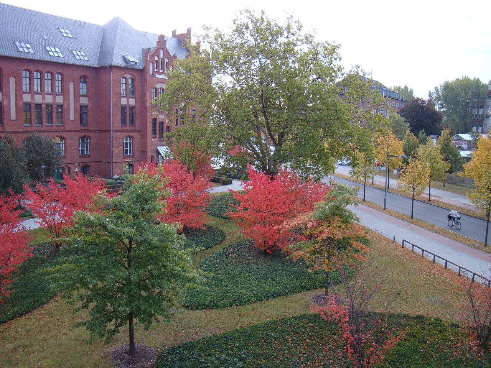

Берлин
#europe #germany В Берлин мы прибыли поздно вечером. Сделав пару кругов вокруг отеля, нашли место для парковки. Закрыли машину, сняли с лобового стекла навигатор с видеорегистратором и отправились на заселение. Мы бронировали отель Best Western Premier Hotel am Borsigturm через booking.com. Отель хороший, заселили без проблем, уютные просторные номера, очень вкусные завтраки, wi-fi в номерах, рядом с отелем есть платная парковка, если кому-то так спокойнее или просто не будет мест вдоль дороги. В 300 метрах от отеля есть станция метро (U-Bahn) Borsigwerke. Сам отель расположен в спальном районе Райникендорф.


Утром на ресепшене купили 2 суточных билета на весь наземный транспорт, каждый билет – 6,5 евро. Может покупать разовые проездные и дешевле, зато так проще, купил, пробил и не паришься, катайся на чем душе угодно. Мы катались, собственно, на метро (U-Bahn) и на “наземном” метро (S-Bahn), что-то среднее между трамваем и электричкой.
При входе в метро стоят автоматы, в которых нужно пробить свой проездной. Если поймают в метро с непогашенным билетом, можно нарваться на штраф. Никаких турникетов и тётушек в погонах на входе в метро нет. В принципе, как и на европейских заправках, никто не следит за тем, оплатил ты бензин или нет. Т.е. сначала подъезжаешь к заправке, потом вставляешь пистолет в бак и заправляешь сколько тебе надо, и, только после этого, идешь на кассу и оплачиваешь по факту. Очень удобная система, по возвращении на Родину это понимаешь.
В самом метро, не ждите, что двери вагона откроются сами, как этого ждал я первые 5 секунд :-). На каждой двери есть кнопка открывания, как внутри вагона, так и снаружи. На каждой станции есть наглядная схема метро. Разобраться в ней – минутное дело. Чтобы убедится наверняка, что вы садитесь в нужном направлении, посмотрите на первый вагон, сверху будет написана конечная станция следования.
Первым для посещения, по советам друзей, у нас был выбран рейхстаг. Те же друзья очень красочно описывали очередь, в этот самый рейхстаг, и очень занимательно рассказывали, как они стояли там по 4 часа. Немного порывшись в интернете, моя жена выяснила, что этот вопрос очень просто решается онлайн-регистрацией на сайте самого рейхстага www.bundestag.de. Регистрируетесь, указываете список посетителей и выбираете три варианта времени посещения. Один из этих вариантов, вам скорее всего одобрят, тем самым вы сэкономите себе пару часов. Посещение рейхстага бесплатное, аудиогиды на крыше – тоже.
Посмотрев панорамы Берлина, мы отправились через парк Тиргартен и берлинский зоопарк к улице Курфюрстендамм, где купили билеты на обзорную автобусную экскурсию (City guide) по городу с русским аудиогидом (озвучка с юморком). После экскурсии поужинали, прогулялись по вечернему Берлину и двинули в Дрезден.